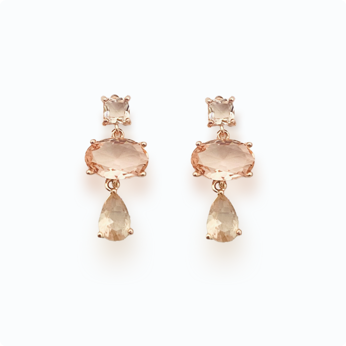

Broadcast · Content · AI
미디어의 모든 순간을
설계합니다
기획부터 송출, 데이터 기반 콘텐츠 자동화까지 — PRISM은 브랜드의 이야기가 방송·스트리밍·소셜 어디서든 같은 밀도로 전달되도록 설계합니다.

Broadcast · Content · AI
기획부터 송출, 데이터 기반 콘텐츠 자동화까지 — PRISM은 브랜드의 이야기가 방송·스트리밍·소셜 어디서든 같은 밀도로 전달되도록 설계합니다.

04 Projects — 2024–2026

“좋은 방송은 기술이 아니라 함께 만드는 사람들의 밀도에서 나온다고 믿습니다.”PRISM 제작본부
PRISM과 작업하면서 방송 퀄리티에 대한 기준 자체가 바뀌었습니다. 디테일을 놓치지 않는 팀입니다.
숏폼 오토메이션 도입 이후 채널 전환 콘텐츠 제작 속도가 세 배 빨라졌습니다.
실시간 그래픽 패키지가 시즌 내내 단 한 번도 흔들리지 않았습니다. 믿고 맡길 수 있는 파트너.
오디오와 영상 제작을 하나의 워크플로우로 묶어준 덕분에 팀 운영이 훨씬 단순해졌습니다.
데이터 대시보드 덕분에 편성 회의 시간이 절반으로 줄었습니다.
브랜드 톤을 정확히 이해하고 채널 리브랜딩을 완성도 있게 마무리해준 팀입니다.
기획부터 송출, 자동화까지 — 첫 미팅에서 채널의 현재 상태를 함께 진단해드립니다.